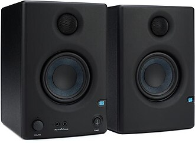
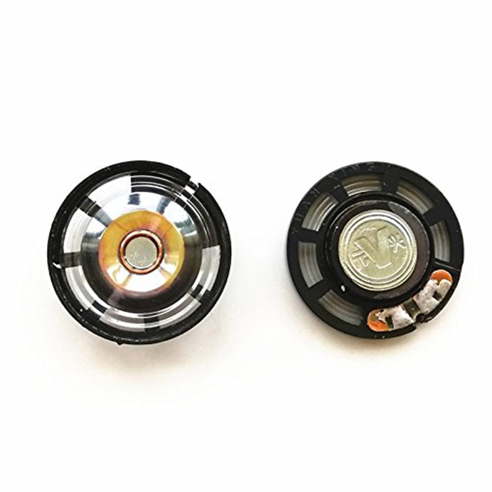

Nice speakers
Studio monitors try to stay fairly even, so a 200 Hz tone and a 2 kHz tone come out closer to the intended loudness.
A square wave is called a square wave cuz its got corners like a square, but its actually more of a rectangle wave. But anyways, its got two phases: the up and the down. Heres the code to make it.
def square(sample_index, frequency, volume):
time = sample_index / sample_rate
phase = (frequency * time) % 1
if phase < 0.5:
return volume
else:
return -volume
You can move that 0.5 in the phase < 0.5 part
around, but it just looks like the same basic shape with a wider up section or
a wider down section. Heres the sections.
Well, this is the fundamental wave. Its the smallest code, and a real Gayme Boyee has two square ish "pulse" channels and a programmable wave channel and a noise channel. So its got 4 channels. And it can play them all simultaneously. But with one speaker isnt that neat. How about another shape of wave that will also hurt your ears.
A triangle wave ramps up, then ramps down. It still repeats once per cycle, but it moves in straight lines instead of jumping.
def triangle(sample_index, frequency, volume):
time = sample_index / sample_rate
phase = (frequency * time) % 1
# phase 0.00 -> -1
# phase 0.50 -> +1
# phase 1.00 -> back to -1
raw = 1 - 4 * abs(phase - 0.5)
return raw * volumeI bet your playing with phase to shift it around but it doesnt sound different ay dipshit? Thats because human ears dont seem to be able to hear the phase quality of sound except maybe in some weird cases.
You can hear phase when you start compositing waveforms, just ignore that for now.
Youll probably end up with a render function like this which takes in a voice and params, and then a bunch of voice functions.
import math
# Voice functions
def square(sample_index, frequency, volume):
time = sample_index / sample_rate
phase = (frequency * time) % 1
if phase < 0.5:
return volume
else:
return -volume
def triangle(sample_index, frequency, volume):
time = sample_index / sample_rate
phase = (frequency * time) % 1
raw = 1 - 4 * abs(phase - 0.5)
return raw * volume
def sin(sample_index, frequency, volume):
time = sample_index / sample_rate
phase = (frequency * time) % 1
return math.sin(phase * 2 * math.pi) * volume
# Render one voice into a list of samples
def render(sample_function, frequency, volume, duration):
num_samples = int(duration * sample_rate)
voice_samples = []
for voice_index in range(num_samples):
sample = sample_function(voice_index, frequency, volume)
voice_samples.append(sample)
return voice_samples
square_note = render(square, 220, 0.25, 0.50)
triangle_note = render(triangle, 330, 0.25, 0.50)Since were playing with different waves, theres something you should know. The actual samples you put in the list and send to the speakers, well the membrane has weight, and it cant instantly teleport to the target position with infinite acceleration.
So it operates kind of like a spring, and actually the physical speaker itself has a resolution it can "resolve". Thats called its frequency response curve.
Big membranes have more weight, and so they cant hit the high notes right. Small speakers have less weight, and so they hit the highs right, but they dont push that much air.
So in a nice ass speaker setup youll have like bigs, smalls, and mediums, and theyll all be tuned to have as flat FRCs as possible.

Studio monitors try to stay fairly even, so a 200 Hz tone and a 2 kHz tone come out closer to the intended loudness.

The original handheld speaker is tiny. Replacement parts are commonly listed around 28 mm and 8 ohms, so the built-in sound is kinda ass. The speaker probably costs like 15 cents.
How to read the graph: the bottom axis is frequency. Left is low pitch, right is high pitch. The vertical axis is how loud the speaker actually plays that frequency. A flat line means the speaker is treating lows, mids, and highs evenly. A lumpy line means some frequencies come out too loud and others come out too quiet.
In the biz when your samples are modified by some other phenomenon we say that my wave is "characterized" by the other thing. That could be a list of samples of voltage values on some device your working with, (or in this case sound). So you might say our sick ass song is being characterized by the FRC of the piece of shit Game Boy speaker.
And to make matters worse, these filters are at every step in the chain. The amplifier in the Game Boy, the chip that drives the amplifier, maybe even the code that drives the chip that drives the amplifier if its poorly written.
So basically, youre fucked 10 ways to sunday. Just know that on the computer we can be specific with our samples, but once its out in the world, membrane displacement is more of a suggestion.
More reading: how speaker frequency response is measured, why studio monitors aim for flat response, common Game Boy replacement speaker specs, and where 44.1 kHz came from.
Check out this cool ass wave I made by taking a square wave, and then averaging each spot in the sample list with its neighbor, and doing that filter like 5 times. Then I slowly ramped up the magnitude in the beginning of the wave, then down again at the end. Listen to this shit. Hows that eh?
def square(sample_index, frequency, volume):
time = sample_index / sample_rate
phase = (frequency * time) % 1
if phase < 0.5:
return volume
else:
return -volume
samples = []
# render
for sample_index in range(num_samples):
samples.append(square(sample_index, 220, 0.42))
# filter it over and over
for pass_number in range(5):
filtered = []
for sample_index in range(num_samples):
previous_sample = samples[max(0, sample_index - 1)]
current_sample = samples[sample_index]
next_sample = samples[min(num_samples - 1, sample_index + 1)]
filtered_sample = (previous_sample + current_sample + next_sample) / 3
filtered.append(filtered_sample)
samples = filtered
# add the fade to make the start and stop more smooth.
for sample_index in range(num_samples):
fade_in = sample_index / 2400
fade_out = (num_samples - sample_index) / 2400
fade = min(1, fade_in, fade_out)
samples[sample_index] = samples[sample_index] * fadeThe filtered one sounds a little less harsh right? Something to think about. Play around with ur wave generator. I wont bias you yet. Apply your virgin mind. Theres a whole science out there for waveform generation.
Alright now that you kinda know the basics about wave shapes. Lets do multiple notes.